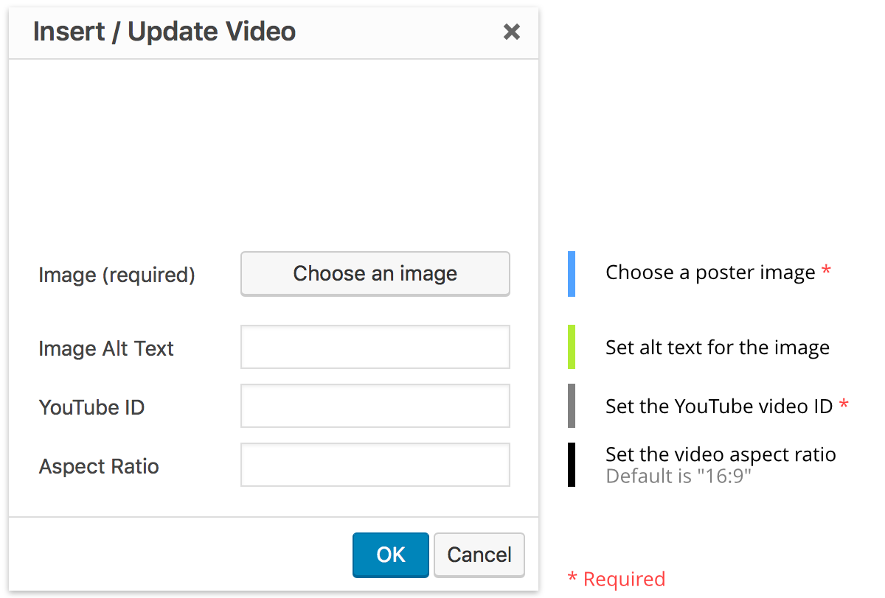

Overlay
To overlay a title and/or an excerpt, create a content block using the class overlay before the img tag.
The overlay will disappear when the user plays the video, and reappear when the video is paused or ends.

Videos are custom YouTube embeds that have minimal YouTube branding and do not show video annotations. They maintain their aspect ratio regardless of browser size or page placement, eliminating letterboxing.
Videos are implemented with the class cl-video
Videos require a poster image. Create a poster with the class poster. The poster is a placeholder for the video in the event that the video cannot be loaded. The poster is replaced by the video.
The poster must also have an id attribute. It can be arbitrary, but it is necessary for YouTube's API to function.
The poster's data-id attribute is used to determine which YouTube video to load, based on the video id. For example, if the YouTube URL is https://www.youtube.com/watch?v=nHlHUqevKcg, create the poster with a data-id of nHlHUqevKcg.
To overlay a title and/or an excerpt, create a content block using the class overlay before the img tag.
The overlay will disappear when the user plays the video, and reappear when the video is paused or ends.
Videos assume a default aspect ratio of 16:9. To specifiy a different aspect ratio, so that the video does not have vertical or horizontal black bars, set a data-aspect attribute on the poster using the format width:height.
Videos can be implemented with the shortcode cl-video
[cl-video id="video1" vid="aK9iLeL5l_c" img="sampleimage.jpg"]
id (string) (required)
Set a unique id for the element
vid (string) (required)
The YouTube video ID
img (string) (required)
The source URL for the poster image
alt (string) (optional)
Set alt text for the poster image
title (string) (optional)
Set a title to be overlaid when the video is not playing
excerpt (string) (optional)
Set an excerpt to be overlaid when the video is not playing
aspect (string) (optional)
Set to specify an aspect ratio other than 16:9
(default value: none)
class (string) (optional)
Set custom CSS class(es)
(default value: none)
With the WYSIWYG plugin installed, videos can be added using the WYSIWYG editor.
The icon to add a video appears in the WYSIWYG toolbar. Clicking this icon opens a dialogue where different video attributes can be easily set.
The completed video will appear fully styled in the editor window. To edit it, simply double-click the video to reopen the editor dialogue.